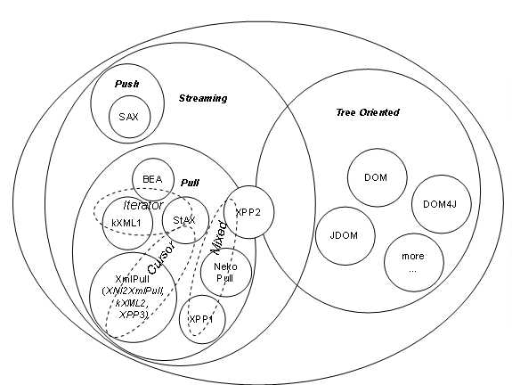

15 March 2004
Aleksander Slomiski
Department of Computer Science
Indiana University
www.extreme.indiana.edu
This paper provides an overview of XML Pull Parsing Java APIs. We first briefly describe how pull parsing is different from other approaches. Then we introduce and guide through myriad of existing APIs: BEA, kXML1, NekoPull, XNI2XmlPull, XPP1, XPP2, kXML2, XPP3, and JSR-173 StAX and compare them. Finally we look on performance implications of APIs design and future directions.
Introduction
XML Pull Parsing is touted as a high performance alternative to DOM for XML parsing that is easier to use than SAX. SAX is push API and enjoys wide spread adoption virtually removing any other push API in Java. This is not the case for pull parsing where many APIs were created and only recently JSR 172 StAX (Streaming API for XML) promises to provide one standard. However even if StAX will become the APi for pull parsing it is important to understand choices made in API, especially dual nature of StAX API. Additionally when choosing XML processing API between tree oriented (such as DOM), streaming push (SAX) and pull (StAX) it is crucial to understand limitations of each approach and in particular trade-off between easiness of use and memory utilization/performance.
We will use a simple example task to compare APIs. We have some data - a simple set of records – address book containing list of persons, each represented as XML. Each record has following structure (name is required, home_address and work_address are optional):
<person>
<name>Joe Doe</name>
<home_address>
<street>101 Sweet Home</street>
<phone>333-3333</phone>
</home_address>
<work_address>
<street>303 Office Street</street>
<phone>444-4444</phone>
</work_address>
</person>
In this example we want to read XML in streaming manner and extract information into Java specific data types, for example:
class Person {String name;
Address homeAddress;
Address workAddress;
}
class Address {String street;
String phone;
}
There is also related work in C [libxml], C++ and C# but in this paper we will concentrate only on Java APIs.
Before we go into description of pull based APIs first let take a look on the only streaming alternative to pulling: push. In type of APIs parser reads XML and notifies application about interesting event by calling set of methods (or passing events). The application has no control to request events instead they are passed by parser when available.
The most popular push based API is The Simple API for XML [SAX2].
Unfortunately the API is not simple to work (this is majority opinion some developers may find required state machines and dealing with stacks of handlers easy and natural) with deeply nested XML structures. As an example see SAX code in appendix [A.SAX1] to parse the example XML that will not be able to detect incorrect input:
The sample code looks simple but unfortunately is incorrect as it will happily accept XML input that does not follow our example structure. For example:
<person>
<name>Joe</name>
<home_address>
<phone>333-3333</phone>
</home_address>
<phone>666-6666</phone>
</person>
The last phone element is in incorrect position but it will be not detected and even worse it will override correct home address phone value.
The solution is to add state variables that will be maintained between pushed events however that requires more complicated code or more sophisticated approach with nested SAX handlers (we will not explore it here). [TODO: reference articles describing those techniques]
With pull API the application is in control and requires next XML event from the parser when it is ready to process it. That means that structure of code that is doing parsing reflects structure of XML documents. This is fundamental pattern visible in all applications using pull based APIs and leads to easier to understand code. We have described this pattern and similar XML pull parsing patterns [PullPatterns] and encourage reader to review them as they help to write cleaner and easier to maintain code that uses any pull parsing API.
As the application maintains control over parsing therefore the parser instance must be made available to all places in code that need to access XML. Typical pull parsing application instantiates parser and then call a method that corresponds to outermost structure of XML, here in pseudo-code:
parser = new PullParser(input)
Person person = parsePerson(parser);
The parsePerson() method needs to follow expected XML structure:
public Person parsePerson(XmlPullParser parser)
throws ValidationException, XmlPullParserException
{Person person = new Person();
while(true) {int eventType = parser.nextTag();
if(eventType == XmlPullParser.START_TAG) {String tag = parser.getStartTagName();
if("name".equals(tag)) { if(person.name != null) {throw new ValidationException(
"only one person name is allowed ");
}
person.name = parser.nextText();
} else if("home_address".equals(tag)) { if(person.homeAddress != null) {throw new ValidationException(
"only one home address is allowed ");
}
person.homeAddress = parseAddress(parser);
} else if("work_address".equals(tag)) { if(person.workAddress != null) {throw new ValidationException(
"only one work address is allowed ");
}
person.workAddress = parseAddress(parser);
} else {throw new ValidationException(
"unknown field "+tag+" in person record");
}
} else if(eventType == XmlPullParser.END_TAG) {break;
}
}
if(person.name == null) {throw new ValidationException(
"person name is required");
}
return person;
}
What is important to notice about this code is that parsing of home or work address is delegated to another method (so code is modular) and that method is shared as structure of both work address and home address is identical.
public Address parseAddress(XmlPullParser parser)
throws ValidationException, XmlPullParserException
{Address address = new Address();
while(true) {int eventTyppe = parser.nextTag();
if(eventType = XmlPullParser.START_TAG) {String tag = XmlPullParser.getStartTagName();
if("street".equals(tag)) {address.street = parser.nextText();
} else if("phone".equals(tag)) {address.phone = parser.nextText();
} else {throw new ValidationException(
"unknown field "+tag+" in person record");
}
} else if(eventType == XmlPullParser.END_TAG) {break;
} else { throw new ValidationException("unexpected XML");}
}
return address;
}
What is important to notice about this code is that parsing of home or work address is delegated to another method (so code is modular) and that method is shared as structure of both work address and home address is identical.
More in-depth comparison of how XML push and pull APIs compare and what are fundamental features of pull approach is in technical repost “Design of a Pull and Push Parser System for Streaming” [TR550]
kXML1 was designed to be easy to use and to work in small devices. kXML1 represents XML event in a straightforward method as objects (XML attributes are not separate events but are accessible from StartElement event). However that turned out to be problem when parsing larger XML documents as memory requirements were higher because of many objects created which is concern for small devices that run J2ME version of Java.
kXML1 is no longer under development and is replaced by kXML2 and XmlPull API.
Example Appendix A.kXML1
WebLogic XML Streaming API [BEAXmlStreaming] is similar to kXML1 and is very strongly modeled after SAX callbacks (includes event to reproduce prefix mapping …). There is no example provided as we had no access to BEA WebLogic 7.0.
As Xerces2 Native Interface (XNI) is designed around push approach. Even though there is pull configuration [XniPull] that allows parsing only chunk of XML after which parser is returning control to the caller. However the chunk can contain more than one event and events are still delivered through callbacks. Therefore NekoPull (and XNI2XmlPull, see XmlPull below) needs to buffer those events to be able to return exactly one event when providing pull interface on top of XNI.
Example Appendix A.NekoPull
This API was created in two layers: tokenizer and parser. Tokenizer is responsible to breaking XML stream into set of tokens corresponding directly to productions in XML 1.0 grammar [XML]. The tokens were assembled into XML events by second layer: parser. XPP1 was implemented both in Java and C++ with identical API. However the API did not provide enough flexibility to use different parser engines.
The main distinctive feature of XPP1 API is how it allowed reusing XML events objects. XPP1 is no loner under development and is replaced by XPP3 and XmlPull.
Example Appendix A.XPP1
XPP2 API is refactored XPP1 into set of interfaces that allows multiple implementations. As proof of concept XPP2 has Xerces2 based implementation and another based on code from XPP1. XPP2 had a unique tree API built on top of pull API that allowed to incrementally load XML tree and provide direct access to XML stream to bypass tree creations for selected parts of XML.
XPP2 is only available in Java. XPP2 is no loner under development and is replaced by XPP3 and XmlPull.
Example Appendix A.XPP2
Needs for very low level API that has very small memory footprint (good for J2ME) and that can be used as a building block for higher level APIs. In this sense XmlPull API sits just on top of XML tokenizer and allows to expose all XML tokens; nextToken() method is specifically designed for it and coupled with optional feature that when implemented by XmlPull parser allow full round trip of XML.
XmlPull API was created by authors of kXML and XPP to avoid a confusion of multiple Java APIs for pull parsing. Common features of both APIs were extracted and then distilled into one core set of API operations that can be implemented and used from J2ME (low memory footprint), though J2SE and J2EE environments (flexible factory and support for selection of class loaders).
Additionally there is an implementation of XmlPull on top of Xerces2.
To meet requirements of small footprint XmlPull defines only one interface to represent XML pull parser and one exception. Additional interface is provided for writing XML output but it is optional in J2ME to keep memory footprint low.
Appendix [A.XmlPul]
It is easy to see that generally there are two types of pull APIs: pure streaming with fast cursor and another that creates XML event objects. StAX does not force developer to use one type of API instead StAX is two APIs in one: StAX Cursor and StAX Iterator modes. StAX API is influenced by XmlPull, XPP1/2/3, kXML1/2, and BEA’s XML Streaming API.
There is a reference implementation from BEA [BEAStAXPreview] and a preview implementation from Oracle [OracleStAXPreview]. The Reference Implementation (RI) is now hosted in codehaus.org and available under Apache License [StAXCodehaus]
Appendix [A.StAXCursor]
Similar to kXML1 and BEA’s event model
Appendix [A.StAXEvent]
We can draw following picture to illustrate how XML APIs relate to each other. XML APIs generally fall into two different categories: stream oriented and tree oriented. There are APIs that can be both stream and tree oriented, such as XPP2 but it is rare. In domain of streaming API we have push (SAX) and pull oriented. They are different enough to require writing programs that are not easily convertible event though both deal with streams of XML events.

The main differentiator for pull parsing is in how XML events are propagated and we can distinguish three groups:
There is no such thing as a perfect API. Instead one should use the API that is best suited to its task. Even though SAX is very popular for streaming XML processing the alternatives such as pull parsing APIs are important to provide the choice of the best tools.
The choice is not only of aesthetical type bus is also
affecting performance [XmlPerf] and leads to different programming approaches,
for example should event have unique identifier or if it is object should it be
compared by using instanceof
operator? There is no one answer especially as Just-In-Time (JIT) runtime
optimization technologies advance for example decreasing performance cost of
short lived objects. The important development in XML pull APIs will be seeing
if StAX dual API is accepted and there is high quality open source
implementation that will help to establish StAX API popularity.
[BEAStAXPreview] BEA Streaming API for XML (StAX) Preview
http://dev2dev.bea.com/technologies/stax/
[BEAXmlStreaming]
BEA WebLogic XML Streaming API
http://e-docs.bea.com/wls/docs70/xml/xml_stream.html
[kXML1] Stefan Haustein “kXML Project“ http://kxml.enhydra.org/software/downloads/index.html
[kXML2] Stefan Haustein “kXML 2“ http://www.kxml.org/
[libxml] Daniel Veillard “The XML C library for Gnome (libxml)” http://xmlsoft.org/
[NekoPull] Andy Clark “CyberNeko Pull Parser” http://www.apache.org/~andyc/neko/doc/pull/
[OracleStAXPreview] Oracle StAX Pull Parser Preview http://otn.oracle.com/tech/xml/xdk/staxpreview.html
[PullPatterns] Aleksander Slominski “XML pull parsing patterns” http://www.extreme.indiana.edu/~aslom/xmlpull/patterns.html
[SAX2] David Megginson et al. Sax 2.0: The Simple API for XML, http://www.saxproject.org/.
[StAX] JSR-173 “Streaming API for XML (StAX)” http://jcp.org/en/jsr/detail?id=173
[StAXCodehaus] StAX RI at codehaus http://stax.codehaus.org/
[TR550]
Aleksander Slominski “TR550: Design of a Pull and Push Parser System for Streaming
XML”
http://www.cs.indiana.edu/cgi-bin/techreports/ TRNNN.cgi?trnum=TR550
[Xerces2] Apache Foundation. “Xerces Java Parser 2” http://xml.apache.org/xerces2-j/
[XML] Tim Bray et al. “Extensible Markup Language (XML) 1.0 (second edition 6 October 2000)” http://www.w3.org/TR/2000/REC-xml .
[XML-NS] World Wide Web Consortium “Namespaces in XML” http://www.w3.org/TR/REC-xml-names/ .
[XmlPerf] Aleksander Slominski “On Performance of Java XML Parsers” http://www.cs.indiana.edu/˜aslom/exxp/ .
[XniPull] XMLPullParserConfiguration described in http://xml.apache.org/xerces2-j/xni-config.html
[XPP1] Aleksander Slominski “XML Pull Parser Version 1 (XPP1)“ http://www.extreme.indiana.edu/xgws/xsoap/xpp/xpp1/
[XPP2] Aleksander Slominski “XML Pull Parser Version 2 (XPP2)“ http://www.extreme.indiana.edu/xgws/xsoap/xpp/xpp2/
[XPP3] Aleksander Slominski “ MXP1: Xml Pull Parser 3rd Edition (XPP3)“ http://www.extreme.indiana.edu/xgws/xsoap/xpp/mxp1/
Content available online in samples subdirectory.